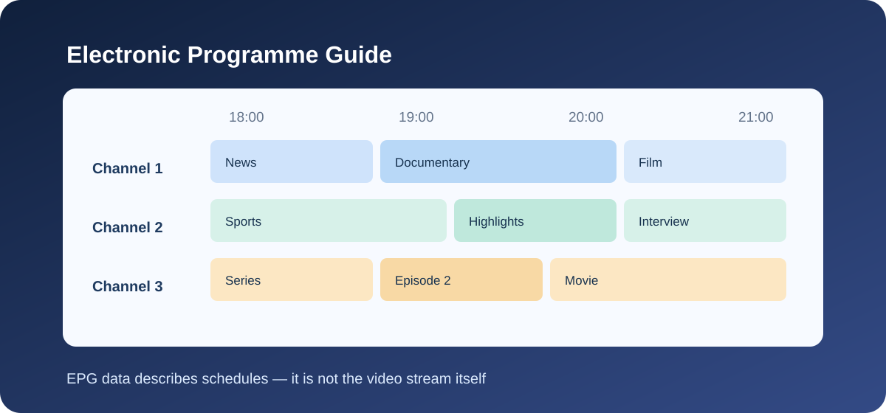

IPTV EPG Explained: What an Electronic Programme Guide Does
Author: IPTV Guide UK · Last updated: 2026-11-21
EPG stands for Electronic Programme Guide. In an IPTV app, it is the on-screen schedule that can show programme titles, descriptions, channels and start or end times. EPG data describes what is scheduled; it is not the video stream and does not make a channel available.

What information can an EPG contain?
- Channel names and identifiers.
- Programme titles and descriptions.
- Scheduled start and end times.
- Categories, episode details or artwork when supplied by the data source and supported by the app.
How IPTV EPG data works
A service or data provider supplies schedule information, and a compatible player reads it to build the guide grid. The feed is commonly provided in an XML-based format such as XMLTV, although accepted formats and setup methods vary by app. Some services provide a separate EPG URL; others may bundle or configure guide data as part of the account setup.
The player then needs to associate each schedule channel with the correct playlist entry. A guide feed can load successfully while listings still appear under the wrong channel if the identifiers do not match.
How EPG matching relates to an M3U playlist
An M3U playlist describes channel entries and their media locations. Extended M3U entries may also include metadata such as tvg-id and tvg-name. An EPG feed can use a corresponding channel identifier to connect programme listings to that entry. The exact matching rules depend on the player and the supplied data.
#EXTINF:-1 tvg-id="news.example" tvg-name="Example News",Example News
https://example.invalid/live/newsIn this illustrative entry, tvg-id is a channel identifier that may be used for guide matching. The reserved .invalid address is an example only and is not a working stream. For a deeper explanation of playlist tags, see the M3U playlist format and tags guide.
Common EPG problems and what to check
| What you see | What to check |
|---|---|
| Guide is completely empty | Confirm that the service supplies guide data, the app supports the feed format, the correct EPG source is configured and the guide has been refreshed. |
| Some channels have no listings | Check whether those channels exist in the schedule feed and whether their identifiers match the playlist entries. Review manual mapping options if the app provides them. |
| Listings appear on the wrong channels | Compare the channel IDs in the playlist with those in the EPG data. Check for duplicate, missing or differently formatted identifiers. |
| Programme times are shifted | Check the device clock, time zone and any app-specific time-offset setting. Also confirm the schedule source's time-zone conventions. |
| Old programmes remain visible | Refresh or update the guide if the app offers that option. Check the feed's update status and ask the data provider whether current listings are being supplied. |
EPG troubleshooting: a sensible order
- Check whether your service or data provider actually includes EPG data; a playlist alone does not guarantee it.
- Confirm that the EPG source or URL has been entered exactly as supplied and that your player accepts its format.
- Refresh the guide and allow the app time to process the schedule.
- If only certain channels are affected, compare their playlist identifiers with the channel IDs in the guide data.
- Check device time-zone and app offset settings if listings are shifted.
- If the problem remains, ask the provider for its current app-specific EPG setup instructions and an explanation of missing channel data.
If the playlist itself is failing to load, use our M3U playlist troubleshooting guide. The M3U Playlist Validator checks playlist text structure only; it does not inspect XMLTV feeds, test EPG matching or verify playback.
EPG versus playlist data
A playlist commonly identifies channels or stream locations, while EPG data describes programme schedules. They may be linked by channel identifiers, but one does not guarantee that the other is present, current or correct. An EPG is also not evidence that a service has permission to distribute the listed programmes.
Frequently asked questions
Does an EPG provide live TV?
No. It displays schedule information. Playback depends on a separate authorised service, compatible app and available stream.
What is XMLTV?
XMLTV is a common XML-based format for sharing television listings. Whether an app accepts a particular XMLTV feed depends on its supported formats.
Why are some channels missing from the guide?
The schedule source may not include them, identifiers may not match, or the app may not support the supplied data.
Does an EPG prove a channel is licensed?
No. Programme listings are metadata and do not establish content distribution rights.
Explore more: M3U playlist format and tags · TiviMate setup guide · IPTV apps guide · UK IPTV legality guide